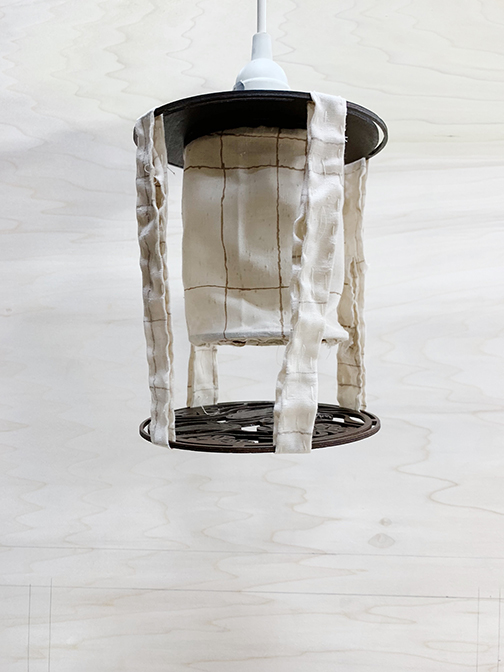

fishlit is a light piece evoking fluidity and warmth. This lamp is the equivalent of a sculptural sketch, which makes it a little wonky but it is definitely one of my favorite pieces I've built. I wanted to create a lamp that evoked fluidity, inspired by Noguchi's furniture. I designed this fish base in illustrator and used a laser cutter to cut it out of plywood. Then, I stained all the wood parts with a walnut stain. For the fabric, I foraged through the massive scrap pile in RISD Second Life (used art supplies store) until I found this gorgeous cream/brown fabric. The fabric is hand sewn and the lamp is assembled with wood glue.
Left to right: 1. Preliminary sketch 2. Illustrator result 3. Cool laser cutting shenanigans. 4. Final base with staining.